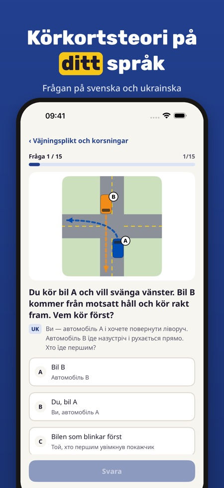
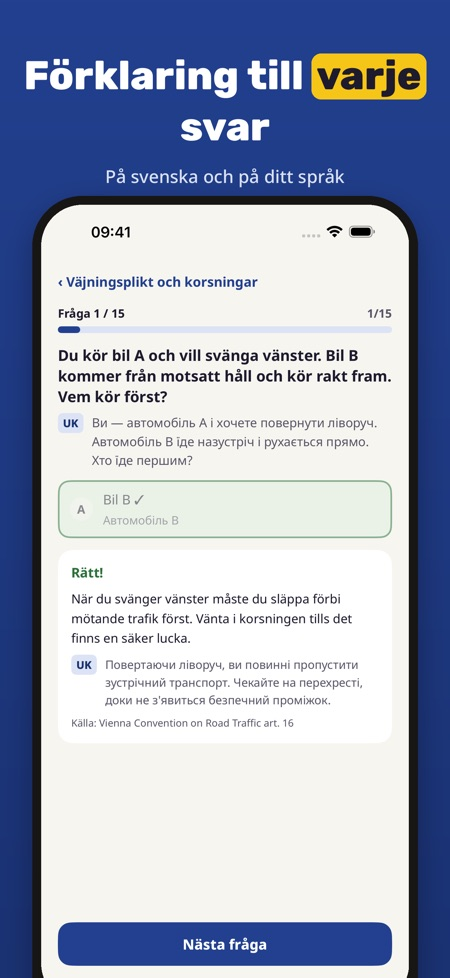
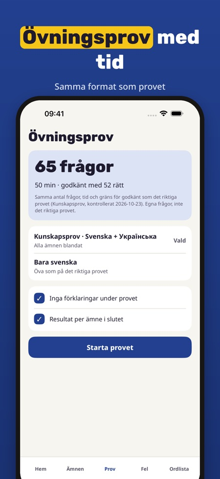

Teoriklar hjälper dig att öva teorin för körkort B när svenska inte är ditt första språk. Varje fråga visas på svenska och på ditt språk.



Frågorna visas på svenska och på ditt språk: ukrainska, somaliska, persiska, arabiska eller engelska.
Appen hjälper dig att öva teorin för körkort B.
Du kan öva 20 frågor, göra ett helt övningsprov och använda ordlistan och checklistan utan köp.
Nej. Fullversionen är ett engångsköp som låser upp alla frågor, övningsprov och statistik. Ingen prenumeration.
Ja. Vägmärkena visas i grupper med orden på ditt språk och det finns en ordlista med de viktigaste begreppen.
Ja, den fungerar utan internet.
Nej. Teoriklar är fristående och inte kopplad till Trafikverket eller Transportstyrelsen. Provet bokar du hos Trafikverket.
Teoriklar hjälper dig att öva teorin för körkort B när svenska inte är ditt första språk: varje fråga visas på svenska och på ditt språk.
Du kan öva 20 frågor, göra ett helt övningsprov och använda ordlistan och checklistan utan köp. Fullversionen är ett engångsköp som låser upp alla frågor, övningsprov och statistik. Ingen prenumeration.
Teoriklar är fristående och inte kopplad till Trafikverket eller Transportstyrelsen. Frågorna och översättningarna är våra egna. Provet bokar du hos Trafikverket.